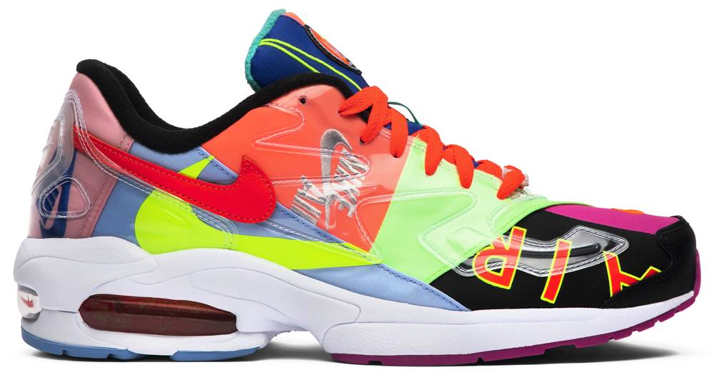
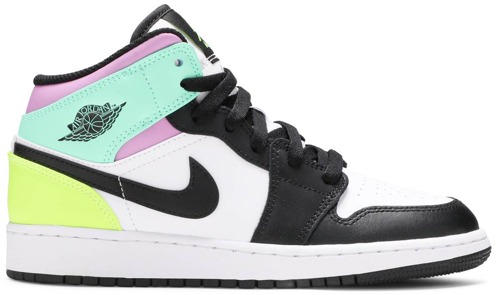
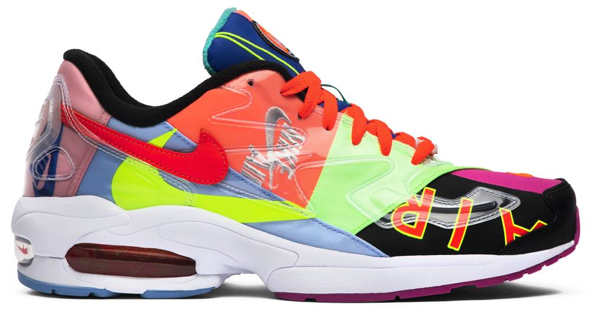
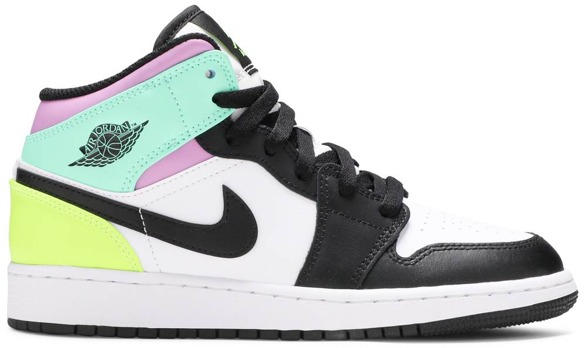
 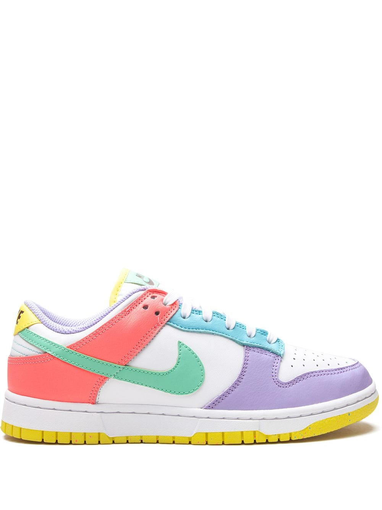
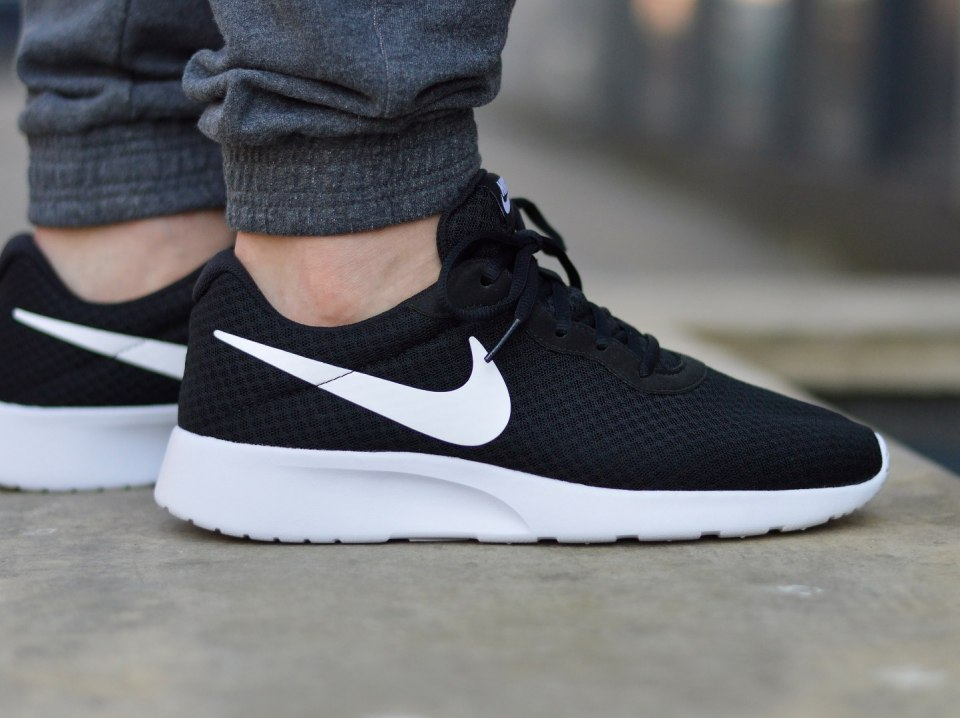
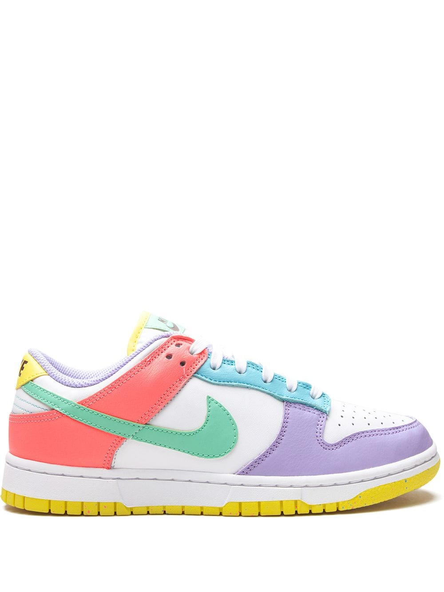
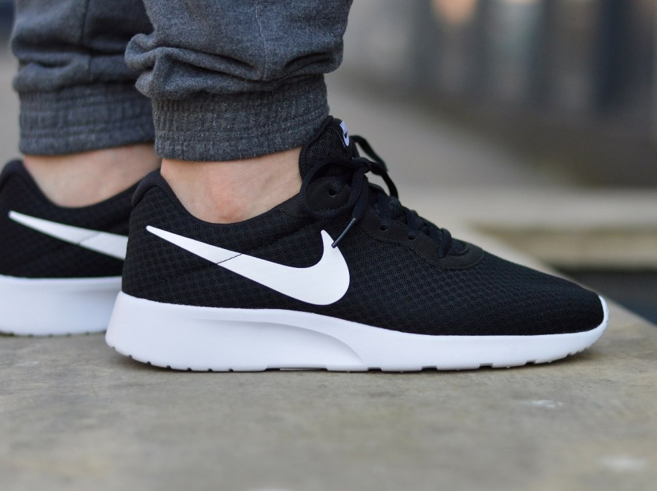
Nike is one of the most successful brands in athletics and sportswear apparel with the largest market share. Since its inception has gone through a lot of changes and it has had a lot of positive impact especially on the male athletes. The brand in today’s market. In today’s market, the Nike brand is thought to be an extremely successful brand among many other brands. On the other hand, consumers and the business expatriates are of the view that the brand Nike is highly respected. It is important to note that in today’s market the Nike branding initiative is not only confined only to consumer products that are packaged for use but also it plays a significant role in all its departments in the organization. Nikes corporate branding is at the frontier in its brand identification ever since the emergence of Nikes’ first slogan and tag line “just do it” the company nurtured some common standards which are associated with the Olympics and sports outdoing ones’ accomplishments, determination and competition.
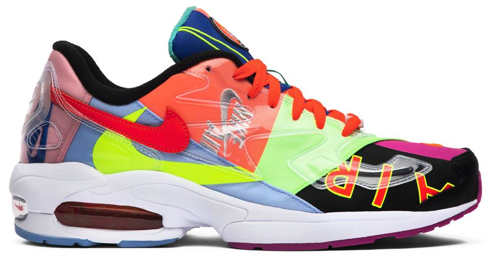
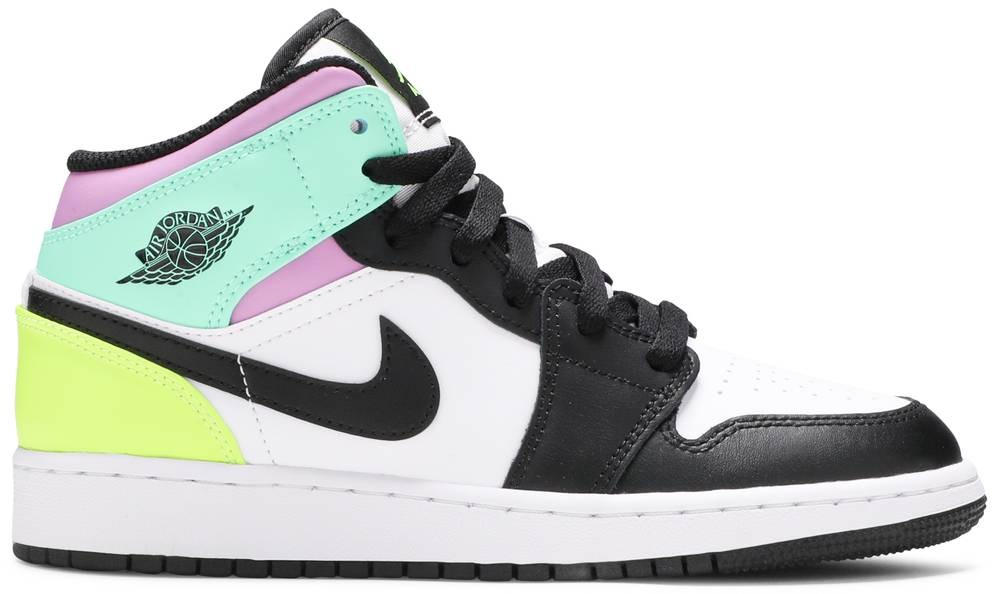
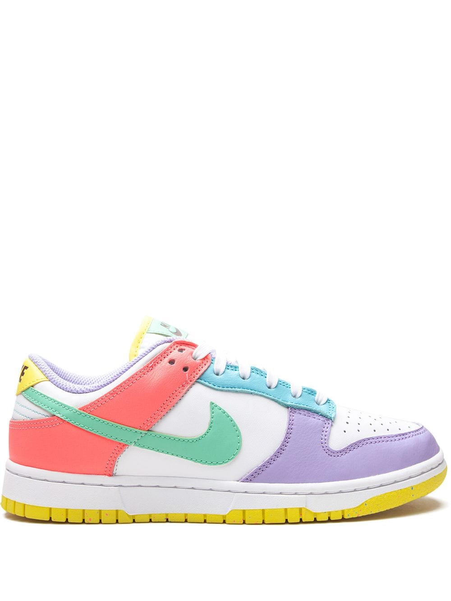
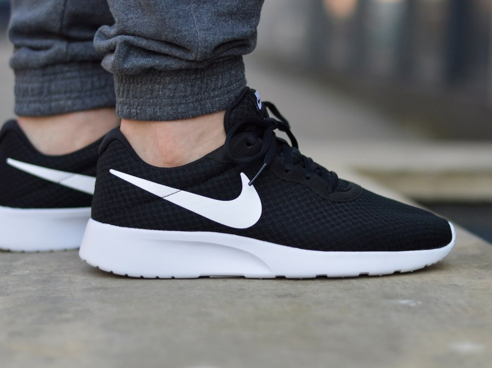
The brand’s evolution. Founded under a partnership in 1962 by Phil knight and bill bowerman the Nike Company was initially known as the “blue ribbon sports.” Then the company’s ultimate goal was to supply to the American consumers high quality and low cost Japanese sports shoes’ as to break Germany’s monopoly in that industry. The first shipment was made in 1962 and 200 pairs of shoes were received. In 1971 the company started manufacturing its own soccer shoes which later on bore the name of the Nike brand with the swoosh trademark. There was a breakup in the tiger relationship in 1972 but a new deal was signed with Jordan in 1980, which led to the company’s growth and expansion (Park, 1994).
Over the years, the Nike Company has grown to manufacturing and distributing the largest share of the sports shoes globally at each viable price. A large percentage of the company’s sales come from the sports apparel and equipment as well as other subsidiary business ventures. Similarly, with its enormous growth the company has maintained both the non-traditional and the traditional channels of distribution in over 90 countries, it also owns many factory stores has many retail outlets and runs websites through which the consumers can buy their products. The company has also been able to grow tremendously and achieve the highest market share in the global market through its aggressive marketing strategies, the innovation of new products as well as the superior production of its products. The company’s turnover has consistently grown and thus generating a lot of revenue and creating employment opportunities for the people. The brand’s target market: today and yesterday. The brand Nike deals with three main categories of products and they include footwear products, apparels, as well as accessories, which differ on different specialties. The largest group of Nikes target market is the young males who purchase more footwear than any other group. Since Nike is a global sports brand its largest target market are the young people or the youth since they interact very well with the brand and they are the major consumers of the company’s products (Park, 1994).. The target market has not changed as much since young people are the major fans of the sporting and athletic activities and the style that goes with it. Positioning of competitors.
Nikes main competitor is the Reebok Company, which is the second shareholder in the sports brand globally with a market share of 25%. The company has a very broad and a unique collection of its products and it has ventured into premium trends and designs. This has allowed the company to be in a position of addressing the many needs of the consumers as well as take advantage of the available marketing opportunities (Dinnie, 2008). Similarly the company with its broad selection of products available to the consumers it has been minimally affected by the market risks that are one-dimensional. On the other hand, the company’s commitment and loyalty to its product quality and innovation creates a very rich heritage, which differentiates its unique brand from the competitors’ brand and thus providing a good foundation of its growth in the future (Soylent Communications, 2010). The celebrity face of the brand: the fit and the target
The Nike brand has been endorsed by several celebrities have including Michael Jordan, Tiger Woods, Le Bron James, and Kobe Bryant whose collaborations have made it remain a unique and valuable brand (Dinnie, 2008). These celebrities are fit for the Nike endorsements since they act as the brands’ spokespeople and this confirms Nikes brands’ market position and general claims by extending their renowned personalities.